Собрал анкету. Имя, юз, возраст, город, время собеса.
Записал на собес. Точный день и час, напомнил перед собесом.
Не пропал. Ошибка номер один — исчезнуть после анкеты. Дальше объясню.
Не пытайся запомнить всё за день. Читай мануал по ходу дела, сначала первые два раздела — остальное догоняешь на практике.
Раздел 1
Что за работа
1.1Работа модели у нас — это что
Модель у нас ведёт разговорные эфиры: общается со зрителями, обсуждает темы, показывает хобби. Никакого интима — формат non-nude, и это нужно говорить прямо в первом диалоге.
Эфиры идут на зарубежных площадках.
График — 5/2 по 5–6 часов в смену.
Деньги — 90 000–120 000 ₽ в месяц, выплаты на карту РФ или крипту.
У платформы есть фикс — вроде 20 $ за стрим, но по факту обычно выходит больше.
Опыт не нужен: контент-план, обучение и поддержка — всё делает наша команда.
Как объяснить одним сообщением ▸ «Ты просто выходишь в эфир и общаешься. Мы подключаем, объясняем, даём контент-план. Про заработок расскажу дальше».
1.2Кого ищем
Возраст: 18–27 лет. Проверяем до собеса, строго 18+.
Внешность: стройная (не крупная), лицо желательно симпатичное — камера любит нормальную картинку.
Живой профиль: есть фото или видео, профиль не пустой.
Свобода перед камерой: она легко общается, видно по видео или стримам в профиле.
Не пиши каждой подряд девочке. Смотри профиль 10 секунд — подходишь под критерии? Пиши. Пустой заброшенный профиль — мимо.
Раздел 2
Где и как искать
2.1TikTok — главный канал
Схема двухшаговая. Нашёл девушку — дальше два пути:
Путь 1: пишешь сразу в личку тем скриптом, который идёт ниже в разделе 3 — прямой заход, самое быстрое.
Путь 2: коммент под видео. Без смайликов, коротко:
Коммент без смайликов ▸ «Мелисса, привет, я модельный скаут, ответь мне в лс»
Подставляешь имя той девушки, у которой пишешь. Это и есть шаблон: имя, привет, я модельный скаут, ответь мне в лс — по нему тебе может написать не только Мелисса, но и другие девушки, которые увидят коммент. Охват больше — шанс выше.
Она пишет в лс — начинается основной диалог уже там.
В комментариях диалог не веди. Только поздоровался и перевёл в личку.
2.2Instagram
Instagram — второй по качеству канал. Девушки там спокойнее отвечают, если заходишь как живой человек.
Ищешь по тегам или по аккаунтам, где девушки снимают себя — «влог», «get ready with me», «подработка» и похожие.
Пишешь в директ первое сообщение (ниже примеры).
Ссылку в первом сообщении не кидаешь — инста банит за такие рассылки, и в директ ссылка идет как спам.
Первое сообщение ▸ «Привет! Ты очень классно выглядишь) Скажи, ты сейчас не рассматриваешь какой-нибудь проект в медиа/контенте? Мы ищем девушек для стримов, могу рассказать, если интересно»
Пиши не в шаблоне — говори по-человечески, слово-в-слово одинаковые тексты инста ловит.
2.3Threads
Самый медленный канал. Аудитория там читает и думает перед тем, как ответить, зато приходит уже настроенная.
Заполняешь профиль — как описано дальше в разделе 5. Пустой профиль в тредс убивает диалог сразу.
Оставляешь пост или коммент про работу/заработок — дожидаешься реакции, потом пишешь в директ уже с контекстом.
Первое сообщение ▸ «Привет! 👋 Ты немного писала про подработку/контент — мы сейчас набираем девушек на разговорные эфиры (non-nude, без интима). Расскажу, если актуально»
2.4Telegram
Основной канал: тут и общение, и анкета, и все материалы агентства.
Ищешь кандидатов по чатам знакомств и по открытым профилям в тематических каналах, где девушки на связи.
Вход такой же короткий, без ссылок и больших текстов.
Просим юз. Если в её профиле нет username — попроси поставить (в TG это пара секунд в настройках). Если нет самого телеграма — попроси скачать, дальше вся коммуникация ведет через него.
Раздел 3
Первое сообщение и диалог
3.1Полный кейс: ТикТок → личка
«Мелисса, привет 🙌 я модельный скаут, ответь мне в лс»
«привет, а что за работа?»
«Привет! Вкратце — работа заключается в проведении эфиров на зарубежных площадках. Расскажу за график и выплаты: график 5/2 по 5–6 часов, выплаты на любую карту РФ или на крипту. Девочки, которые работают по бартеру, зарабатывают 90 000–120 000 ₽ в месяц»
«а эфиры — это типа вэбка?»
«Нет, формат non-nude — обычное общение со зрителями, развлекательные темы, показ хобби. Никакого эротического или интимного контента»
«а опыт нужен?»
«Нет. Мы даём команду, контент-план, обучение и поддержку на всех этапах. Главное — что ты яркая и общительная. Хочешь попробовать?»
«…да вроде интересно»
«Отлично. Тогда дальше: подпишись на наш ТГК — там полная информация по работе и условиям. После этого запишу тебя на собеседование. Юз в телеграме у тебя есть? Если нет — поставь в настройках профиля, это пара секунд»
Заметь: анкета собирается в конце, не в начале. Сначала выстроили интерес, потом учётку.
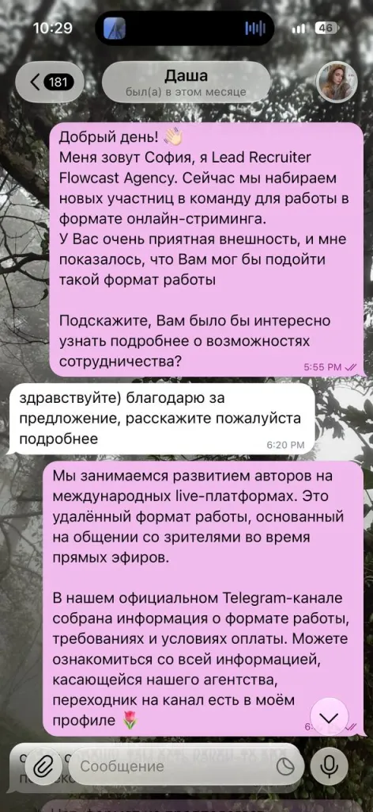
Реальный кейс, часть 1: первое сообщение и подача сути
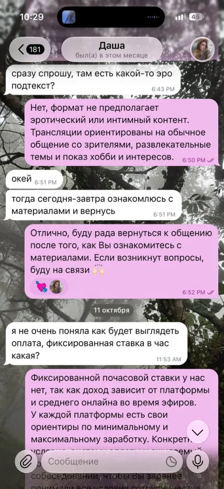
Реальный кейс, часть 2: «эро подтекст?», «подумаю», вопрос про оплату
Смотри как в кейсе: короткие сообщения, вопрос-ответ, никаких простыней. Первый контакт — вежливо и на «вы», дальше — живо. Ответы на «эро подтекст?» и «какая ставка?» бери отсюда же.
3.2Как писать — базовые правила
Пиши проще, не сложнее
Ты общаешься с такой же девочкой, как ты, а не сдаёшь экзамен. Короткие сообщения, живой тон, эмодзи по минимуму. Не копируй чужую манеру — стиль тимлида тебе не подойдёт, пиши от себя.
Один вопрос за раз
Не вываливай всё сразу: суть — потом условия — потом анкета. Она отвечает — ты даёшь следующий шаг. После каждого сообщения она должна понимать, что происходит дальше.
Отвечай быстро
Пока диалог горячий, отвечай в течение пары минут. Пропустил несколько часов — инициатива остывает, и начать заново сложнее.
Не дожимай
Если она не готова — оставь дверь открытой: «вернись с вопросами в любой момент». Продавливание только отталкивает.
3.3Частые вопросы и ответы
«Это вэбка?» ▸ «Нет, формат non-nude. Трансляции — обычное общение со зрителями, развлекательные темы и хобби. Интима нет»
«Оплата фиксированная?» ▸ «Фиксированной почасовой ставки нет, доход зависит от платформы и среднего онлайна во время эфира. У платформы есть фикс вроде 20 $ за стрим, но по факту обычно выходит больше. Конкретные условия разберём на собеседовании»
Правило про деньги ▸ Зарплату называем только в месяц. Она спрашивает «сколько я получу?» — отвечаешь суммой за месяц (90–120к ₽), не в час и не за смену.
«У меня нет опыта» ▸ «Он не нужен. Команда выстроит, поддержит, поможет в самом старте — суть в другом: яркая, приятная внешность и желание общаться»
«Я подумаю» ▸ «Конечно 🪷 Смотри официальный ТГК агентства — вся информация про формат и заработок там. Возвращайся с вопросами, ответим»
Раздел 4
Кейсы: реальные диалоги
4.1Кейс 1 — Инстаграм → ТГ → анкета
Кандидатку violaa нашли в инсте, вошли комплиментом по внешности, объяснили суть, ушли в телеграм, там — анкета и запись на собес. Смотри по скринам:
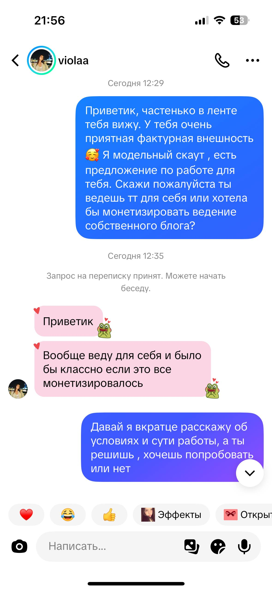
1. Первое сообщение в директ: комплимент + вопрос «ведёшь ТТ для себя?»
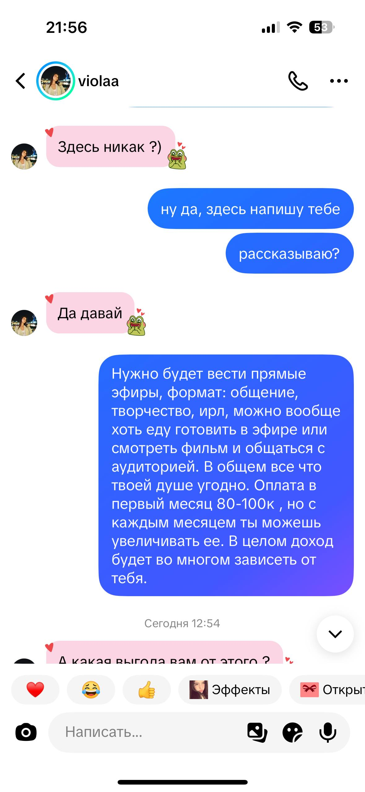
2. Выяснили работу профиля → «рассказываю?» → суть эфиров + оплата 80–100к первый месяц
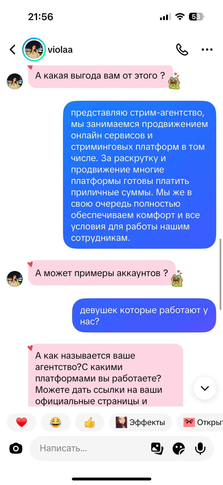
3. Она спрашивает «какая выгода вам?» — спокойно объясняешь: агентство, продвижение, условия для сотрудников
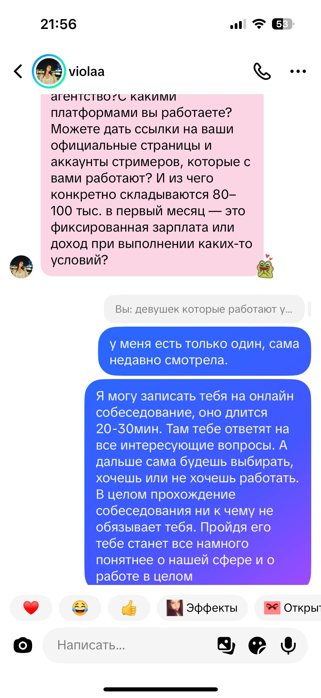
4. Она спрашивает про аккаунты моделей и ссылки — отвечаешь честно, что смотришь сама, и ведёшь к собесу
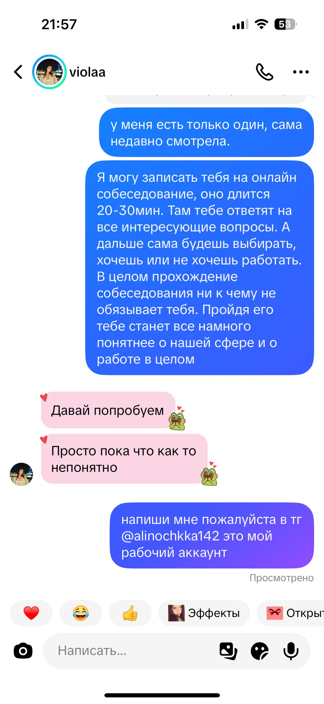
5. Продаёшь собес как лёгкий шаг: длится 20–30 мин, ни к чему не обязывает, там ответят на всё
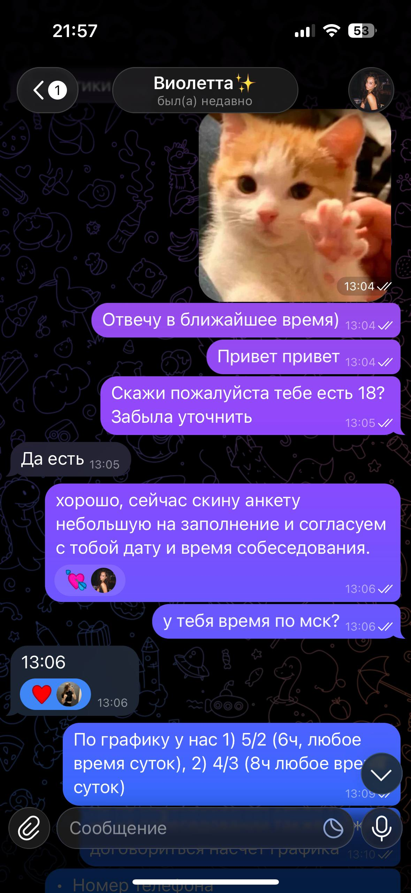
6. «Давайте попробуем» — переводим в ТГ: вот ник рабочего аккаунта
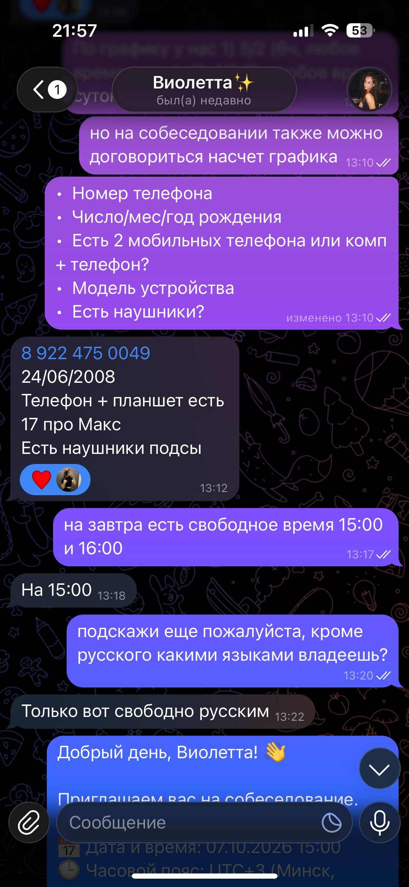
7. В ТГ: уточнили 18+, отправили анкету, выбрали время собеса, проверили язык
Что взять: заход через комплимент, суть только после «давайте», собес проговаривается как лёгкое дело ни к чему не обязывающее, перевод в ТГ сразу после «да».
4.2Кейс 2 — Инстаграм: «подумаю» и путь до собеса
Эталонный кейс. Кандидатка всё время сомневалась — «насколько легально», «у знакомых был плохой опыт», «дам ответ к вечеру» — но скаут не давил и довёл до записи на собес. Разбор по скринам:
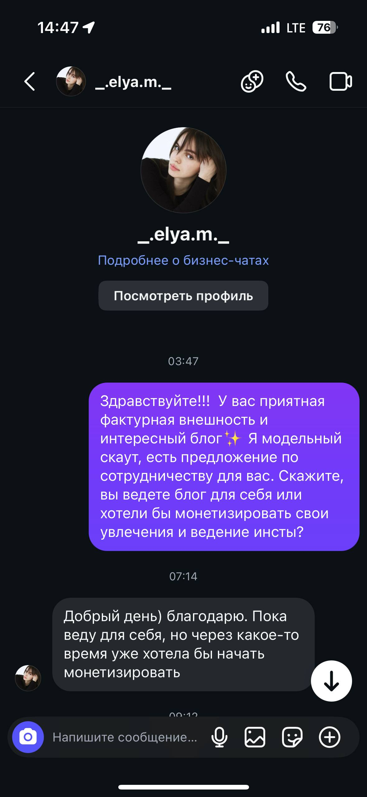
1. Первое сообщение: комплимент + «ведёте для себя или хотели бы монетизировать?»
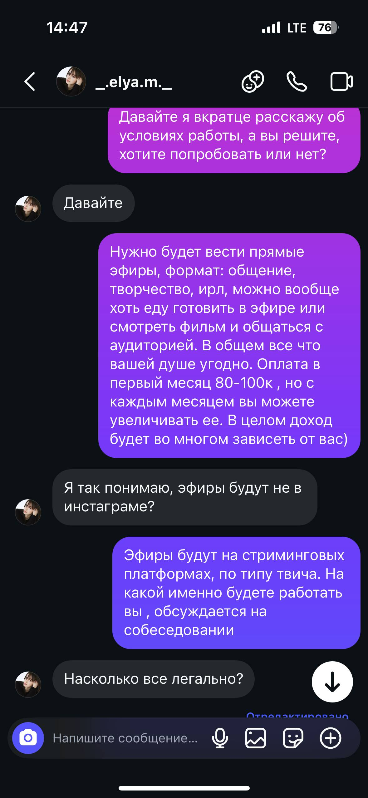
2. «Давайте расскажу условия» → суть эфиров + оплата первый месяц 80–100к + «доход зависит от вас»
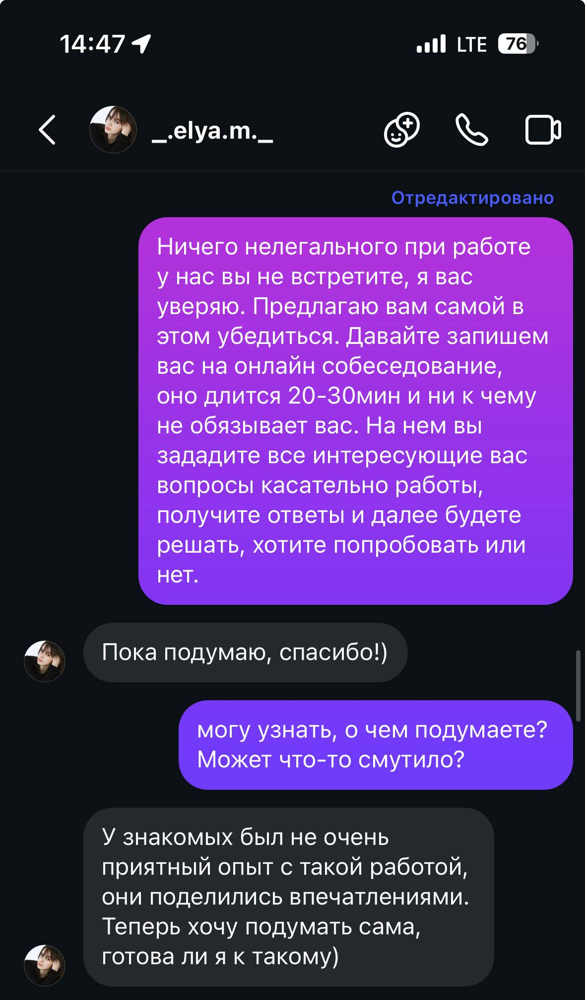
3. «Насколько всё легально?» — «ничего нелегального, предлагаю убедиться самой на собесе»
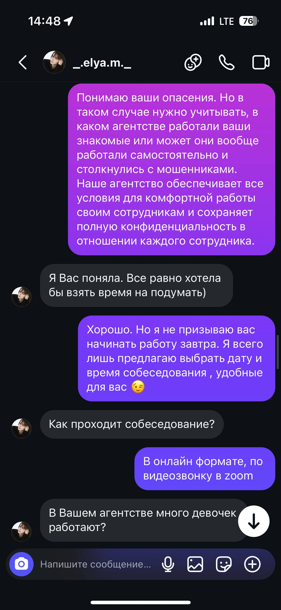
4. «Пока подумаю» → не давишь: «я не призываю начинать завтра, просто выберите дату собеса»
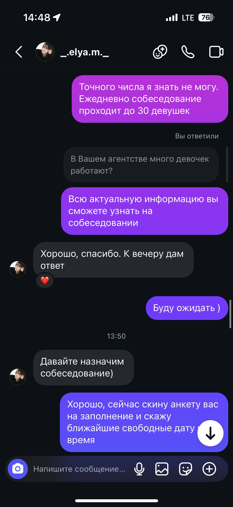
5. Ответы на вопросы — спокойно и без обещаний: «сколько собесов?», «много девочек?» — «всё узнаете на собеседовании»
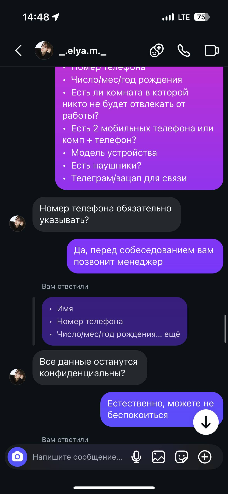
6. Пока думает — «хорошо, к вечеру дам ответ» → и сама возвращается: «давайте назначим собеседование» → «сейчас скину анкету»
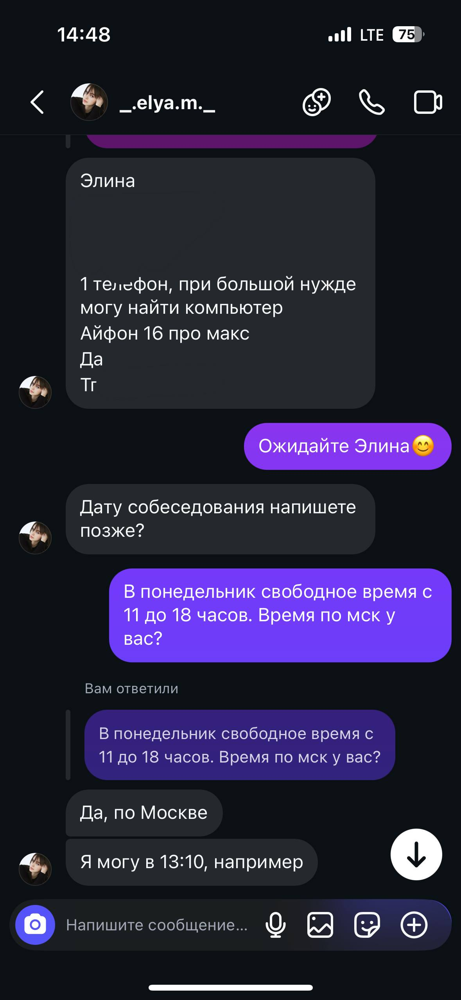
7. Скинул полную анкету: имя, телефон, дата рождения, комната, устройство, наушники, тг/вацап — и сразу ответ на «номер обязателен?»
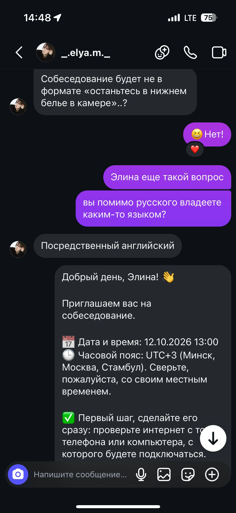
8. Отработка: «конфиденциально?», «документ?», «собес в нижнем белье?» — дежурный спокойный ответ на всё
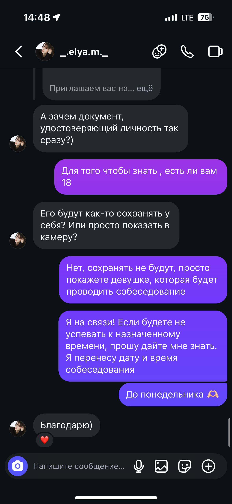
9. Финал: выбрали время, сверили часовой пояс, напомнили проверить интернет — и «я на связи»
Что взять: лёгкость + терпение. Она дважды устранилась («подумаю», «дам ответ к вечеру») — и оба раза скаут не надавил, дал право решать самой, оставил дверь открытой. Итог: она сама вернулась и записалась. Никаких обещаний и никаких прямых дожимов.
Раздел 5
Оформление профиля
5.1Профиль = первый экран доверия
После первого сообщения она первым делом зайдёт к тебе на профиль. За 5 секунд она решает: пишет живой человек или спам-бот. Поэтому профиль должен работать на тебя.
Telegram: реальное имя (или ник) + роль. Пример: «Sofia Nyashirova 🪷».
О себе: «Lead Recruiter | Flowcast Agency» + ссылка на сайт агентства.
Аватар: живой, один и тот же на всех площадках. Разные аватарки в ТГ и ТТ ломают доверие — она должна опознать одного и того же человека.
Часы работы: открой в TG, чтобы ей было видно, когда ты онлайн.
Аватар и ник на TikTok/Instagram ▸ Ник вида arina.flowcast, био: «Flowcast Agency HR Manager, tg: arina_flowcast». С другой площадки ты направишь её в ТГ — аватар и ник должны совпадать.
5.2Примеры оформления — смотри, как выглядит
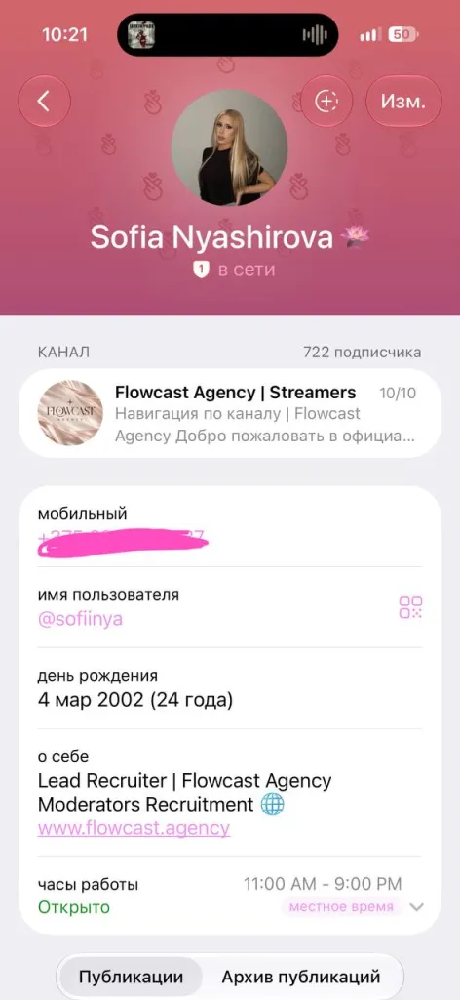
Telegram: имя + роль, юз, о себе со ссылкой, часы работы, канал агентства в плашке
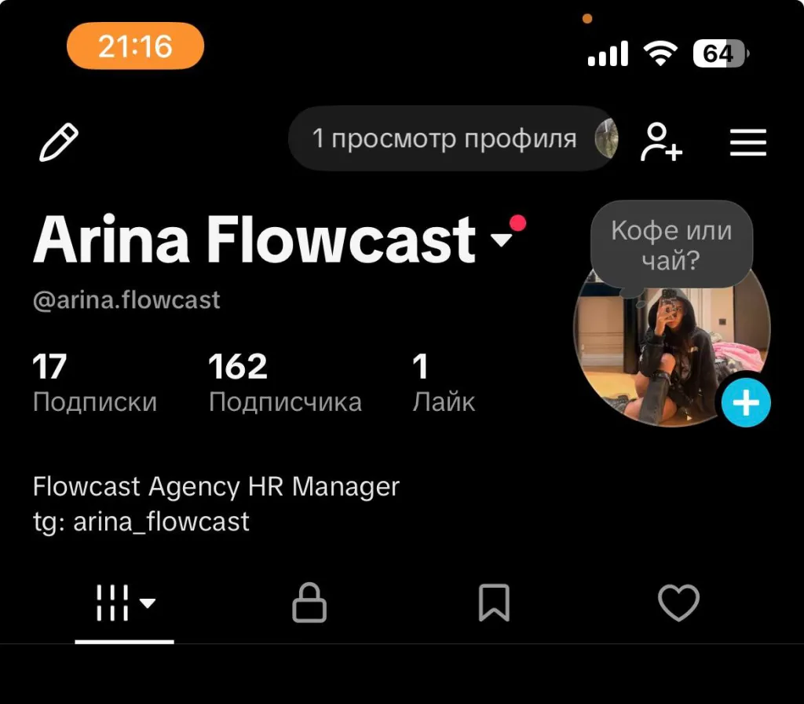
TikTok: ник с агентством, био с переходом в ТГ
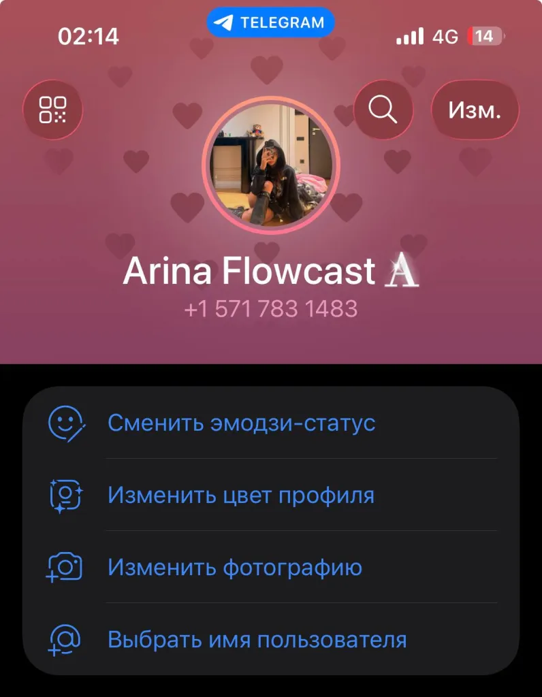
Telegram: альтернативное оформление, аватар совпадает с ТТ
Оформление своё, но по этим же правилам: имя + должность, о себе с ролью и ресурсом агентства, аватар живой. Не создавай профили, которые выглядят как отдельный официальный аккаунт агентства — ты рекрутер, не сам агентство.
Раздел 6
Анкета и собес
6.1Анкета — 5 полей, собираются по ходу
Не скидывай кандидату огромную форму. Данные собираются в диалоге, по ходу дела:
Имя — как к ней обращаться. Прямо в начале: «Как тебя зовут?»
Юз — юзернейм в телеграме. Нет юза — попроси поставить в профиле, это настройка на пару секунд.
Возраст — строго 18+.
Город — где живёт.
Время собеса — в конце разговора уточни, когда ей удобно пройти собеседование.
Старт диалога ▸ «Как тебя зовут? По имени как-то приятней общаться»
К финалу ▸ «Так, у нас есть свободные слоты на собеседование на завтра. Во сколько тебе удобно? Утро или вечер?»
6.2Передача кандидата дальше
Собес — точное время. Не «я закину завтра», а «завтра в 16:00».
CRM. Вноси кандидата и данные до отправки. Проверяй опечатки — ошибки по CRM повлекут выговор.
Передавай ответственному и проставляй статус.
Напоминание. За 1–2 часа до собеса тихое «встречаемся в 16, жду ☕».
Раздел 7
Легитка: куда отправляем
7.1Когда кидать ссылки агентства
Если кандидатка просит сайт, канал или проверку «а вообще кто вы» — отправляй официальные ресурсы Flowcast:
Не «вставляй их в первое сообщение всякий раз» — сначала диалог, потом линки по запросу или когда она готова узнать больше.
Готовая фраза ▸ «Скину тебе официальный телеграм-канал агентства, там полная инфа про формат и заработок — t.me/flowcast_streamers. Посмотри и возвращайся, ответим на вопросы»
Раздел 8
Главная ошибка
8.1Почему 70% моделей теряются
Слушай внимательно, это решает всё.
Около 70% моделей уходит именно после анкеты. Не в начале и не на собесе. А сразу после того, как она дала данные.
Почему? Потому что скаут получил анкету, передал её в CRM — и забил на кандидата: написал в лучшем случае раз в день, а то и пропал вообще.
Девочка осталась с вопросами: «а что теперь?», «а с кем мне теперь общаться?», «а вдруг это всё фейк?» — и мотивации идти дальше нет. Она не пишет отказ — она просто молчит. А молчание = уход.
После анкеты — общайся как раньше. Спрашивай, как дела, чем занимается, что интересного. Это не «лишняя работа», это удержание.
Держи контакт не только по работе. Она должна чувствовать, что уже часть команды, а не строка в таблице.
За час до собеса напиши, перед самым началом напомни.
После собеса уточни: как прошла, что непонятно, есть ли вопрос.
Просто запомни ▸ Анкета — это не финал. Это момент, когда кандидат становится твоей — и если сейчас пропасть, работа сделана зря.
Раздел 9
Реанимация и дисциплина
9.1Если молчит
4–6 часов тишины — одно спокойное сообщение, без паники и повторов. Например: «Привет, как ты? Успела посмотреть канал?»
Снова молчит — вернёшься на следующий день, в другое время. Не дублируй сообщения.
Двое суток — кандидат в архив, идёшь дальше. Может вернуться сама — это нормально.
9.2Чего НЕ делать никогда
Не обещай денег, которых не гарантирует работа. 90–120к ₽ — это реальные цифры работающих моделей, а не гарантия каждому. Не «успеешь 200к за месяц, обещаю».
Не пиши от лица официального агентства. Ты рекрутер, не сам Flowcast. Оформление профиля — как в разделе 5, никаких «официальных страниц» от себя.
Не спамь одинаковыми сообщениями подряд. Разные заходы — разные тексты. Поймала платформа на шаблоне — заблокирует и тебя.
Не дави на «подумаю». Спокойно скажи, что можно задать вопрос в любой момент — и оставь дверь открытой.